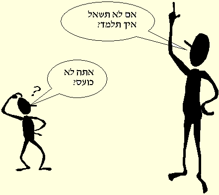

.ומשמעותי בטקסט ולהכללה המתאימה למטרות שהוגדרו לכל שיעור
.שאילת שאלות היא כלי חשוב בלמידה
תרומת השאלות לתהליכי למידה ולחינוך היא נושא המעסיק פדגוגים עוד
מתקופת יוון העתיקה )סוקרטס, הסופיסטים(. בתקופתנו הנושא זכה לתהודה
.בעקבות הפניית תשומת הלב לחשיבות השאלה בתהליך הלמידה על ידי פיאז'ה
מחקרי חינוך מציינים את תהליך שאילת השאלות ככלי יעיל בשיפור יכולות
.חשיבה ובטיפוח לומד בעל כשירויות למידה טובות
.כלומדת מיומנת ודאי נתקלת בסיטואציות שונות בהן שאלת שאלות
?נסי לשחזר ושתפי בכך את חברותיך בקבוצת הדיון: מתי נתקלת בצורך לשאול
את מי את שואלת? האם קשה לשאול שאלות? האם נתקלת במצב בו נסוח
שאלה גרם לקבלת מידע/תשובה לא מספקת? איזה סוגי שאלות את שואלת
?בדרך כלל? האם ניתן למיין את סוגי השאלות שמועלות על ידיך
.הגיבי לדברי חברותיך וחזרי אחר כך להמשך השעור
:לשאילת שאלות חשיבות רבה בלמידה
הלומד העצמאי מבנה בעזרת שאלותיו את הידע הנלמד, מרחיב אותו ויוצר
ממנו תובנות חדשות. שאילת שאלות זוהתה במחקרים כמיומנות למידה חשובה
.בפיתוח לומד עצמאי
המורה בכתה יוצרת אינטראקציה עם התלמידים לצורך בדיקת ידע, הבהרת
.מושגים, ארגון מחודש של הנושאים הנלמדים ולשיפור תהליכים קוגניטיביים
מחקרים מראים על קשר בין שאילת שאלות לזכירה, להשגים לימודיים, להבנת
הנקרא ולחשיבה ומרמזים על כך ששורשי החשיבה היצירתית טמונים בשאילת
.שאלות והעלאת השערות
:בשיעור זה נעסוק בשני נושאים לשיפור
תפקיד המורה בשאילת שאלות
שיפור ההתנהגות השואלת של התלמיד
סוגי שאלות
.השאלה היא מכשיר חשוב כאשר משתמשים בה בצורה הולמת
אולם כאשר השימוש בה נעשה ללא הבחנה, או ברמת פעילות נמוכה היא
.מעכבת את ההתקדמות והלמידה
.יתר על כן, שמוש בשאלה כאיום - הופכת אותה ככלי נגד הנשאל
התאוריה והמחקר מציעים מגוון מיונים של שאלות, לדוגמא: שאלות פתוחות
מול שאלות סגורות, שאלות עקיפות מול שאלות ישירות, מיון שאלות על פי
.הטקסונומיה של בלום ועוד
?מהי שאלה פתוחה
.שאלה רחבה, המגייסת ומאיבה מהשקפותיו, מחשבותיו והרגשותיו של הנשאל
"שאלה זו פותחת פתח לשיח מורכב יותר. יכולות להיות לה תשובות "נכונות
.שונות
?ומהי שאלה סגורה
שאלה צרה, המגבילה לתשובה ספציפית, דורשת עובדות ישירות ומגבילה את
.השיח
|
|
|
|
|
|
|
|
|
|
|
?במכללה, היש לך מחשבות או הרגשות בנדון |
רצוי להעדיף שאלות פתוחות בשיח חברתי, ובסכום נושאים, מאחר והן עשויות
.לפתוח את אפשרויות הביטוי של התלמידים בכתה
?מהי שאלה עקיפה
שאלה המגלה התעניינות, מאפשרת לפתח נושא באופן רחב. לעיתים נשמעת
כהגד ולא כשאלה. לדוגמא: זה ודאי קשה ללמוד ביום ולעבוד לפרנסתך בשעות
.אחר הצהריים
?ושאלה ישירה
?קשה ללמוד ביום ולעבוד אחר הצהרים, נכון
.חשוב שהשאלות לא תהפוכנה לכלי כנגד התלמיד
"?שגיאות נפוצות בשימוש לקוי בשאלות הן: הפצצה בשאלות ושאלות "למה
.מוסטות
.הטחת שאלות בזו אחר זו לפני שהתלמיד הצליח להגיב
- הפצצה בשאלות
בדרך כלל הדבר נעשה בשעת מתח או כעס, כאשר השאלות הופכות לנשק מול
התלמיד. המצב מאיים, אינו מאפשר לנשאל לבחון באופן עצמאי ותואם את
העניין. התחושה העולה היא של חוסר אמון/ אי כבוד הדדי. דוגמא: למה דחפת
אותו? מה אמרתי לך לפני ההפסקה? כמה פעמים דברנו על ההתנהגות
'בהפסקה? - וכו
מצב שכיח אחר של הפצצה בשאלות נגרם מתוך רצון לצמצם מקטעי זמן של
שקט באינטראקציה בין דוברים, מתוך רצון לשמור על חוקי פרגמטיקה תקינים
בשיח. לחלק מהתלמידים במסגרות החינוך המיוחד יש צורך בזמן עיבוד של
מסרים שמיעתיים )לעתים עד דקה(. התחושה של המורה היא של ניתוק רצף
השיח, ובדרך כלל הנטייה היא למלא את החלל בשאלות "הסבר". מבחינת
הלומד הזקוק לזמן עבוד ארוך, התחושה היא של הפצצה בשאלות. הוא אינו
מסוגל להתמודד עם הקצב בו הן מועלות והתחושה העולה היא של תסכול
הדדי. דוגמא: "יש כאן שתי דיסקיות ולקחתי שתיים, כמה נשארו?- לאחר כחצי
-דקה- כמה דיסקיות נשארו? - לאחר עוד 02 שניות
אם מורידים מארבע שתיים, כמה נשאר? - לאחר עוד 51 שניות - כמה יש לי
."ביד? - לאחר 51 שניות- בוא ננסה שוב, זה קשה
שאלת חיפוש המידע משמשת רבות במערכות יחסים של
- "שאלת "למה
מבוגרים וילדים, כמרמזת על אי שביעות רצון, האשמה ונזיפה. בדרך כלל
השאלה גוררת צורך להתגונן, להתכנס פנימה או לתקוף. אם הכוונה להביא
לפתיחות, להתבוננות עצמית )במקום התגוננות( ולנגיעה באמת פנימית)במקום
התחכמות(, כדאי לשאול שאלות ענייניות, ולשמור את ה"למה?" לשאלות
.המכוונות באמת לקבלת מידע
: תפקיד המורה בבחירת שאלות
כנגד ארבעה בנים דברה תורה. אחד חכם, ואחד רשע, ואחד תם, ואחד שאינו"
"יודע לשאול
שלושת הבנים הראשונים מגלים מיומנות נאה בשאילת שאלות, לגבי הבן
:הרביעי
."ושאינו יודע לשאול >b<>b/<->b< >b/<את פתח לו"
(מתוך ההגדה של פסח)
שאילת שאלות ברמות שונות מהוות בסיס לעבודה בכתה הטרוגנית, באמצעות
.פנייה בסוגי שאלה שונים לתלמידים
.באמצעות השאלות המורה מגרה את התלמידים לחשוב וללמוד
, תכנון השאלות על ידי המורה חייב להביא בחשבון את מטען הידע של התלמיד
כשרו )גילו, יכולת הפשטה(, ויכולתו להפיק מהידע תועלת בטווח כושר
החשיבה. חומר הלימוד נתפס, על כן, לא רק כידע נרכש )שהינה מטרה
.כשלעצמה( , אלא משמש כאמצעי לשיפור יכולת החשיבה של התלמיד
על כן רצוי שתכנון שאלות בשלב ההתנסות והלמידה לקראת הוראה יעשה
.בשלבי בניית מערך השיעור ויהיה מותאם למטרות הקוגניטיביות המתוכננות
המודל של בלום לניסוח מטרות קוגניטיביות על פי רמת מורכבותן, מוכר לכן
מלימודי שנה א' ולכן יתבסס שיעור זה העוסק >a/< ברמות שונות של שאלות >"lmth.ksa"=ferh a< על
.הטקסונומיה של בלום
,בשימוש בטקסונומיה של בלום יש ששה טיפוסי שאלות: ידע, הבנה, יישום
.אנליזה, סינתזה הערכה
שלושת הסוגים האחרונים מתבססים על רמות חשיבה גבוהות. מורכבותן נובעת
מהיותן בעלות תשובות פתוחות, תיתכנה עבורן תשובות אחדות, הן מפתחות
כשר יצירתי אצל הילד בתחומים קוגניטיביים. תכנון שאלות ברמה גבוהה
מחייב את המורה לבחון אם התלמיד מסוגל להשתמש במידע להסקת מסקנות
.או לפתרון בעיות חדשות
שאלות ברמה של ידע
מורים נוטים לשאול הרבה שאלות ידע במהלך השיעור
|
|
|
|
|
|
|
זכירת הגדרות .2 |
|
|
(הגדר )כשההגדרה נתונה בטקסט |
|
|
?הוקמה מדינת ישראל? מה נברא ביום הראשון ?מהו מכנה משותף? מהו מבנה סינטאקטי |
|
|
|
|
שאלות ברמה של הבנה
דפוס שאלות שכיח המלווה את שאלות הידע
|
|
|
|
|
|
|
ציון רעיונות עיקריים השוואה |
|
|
,בין |
|
|
בריאת המאורות. צייר את גן העדן. תארי בלשונך את (תכונותיו של מתתיהו )מתוך הסיפור ?מהו הרעיון המרכזי מה ההבדל בין שאלה פתוחה וסגורה? השווי בין .תכונותיהם של דוד ושלמה |
|
|
|
|
שאלות ברמה של יישום
|
.במצבים חדשים |
|
|
|
|
|
|
|
|
|
|
|
אם הממשל בישראל הוא מונרכי/ דמוקרטי/ תיאוקרטי- על פי המאפיינים שנלמדו. נתח את השיר על פי המאפיינים שלמדנו. הציגי הכנסת אורחים כיום לאור העקרונות של הכנסת אורחים בספור אליעזר ורבקה. מצאי בתנ"ך חלוקה לספרים פרקים ופסוקים. אם יש לי 01 שקלים, כמה סוכריות ?שעולות 02 אג' אוכל לקנות |
|
|
|
|
שאלות ברמה של אנליזה
|
הלימודים |
|
|
.בין עובדות לדעות |
|
|
עריכת הקשים והכללות בדרך של אינדוקציה (מציאת הוכחות לתמיכה בהכללה )דדוקציה |
|
|
?האישור? אילו ראיות? במה מתבטא |
|
|
פתרון לשאלה היהודית? מדוע אהב יעקב את יוסף מכל ?אחיו? מדוע בחר יוסף להתוודע לאחיו בדרך שבחר מתוך מה שנלמד על הסילבוס במקרא, מה תוכלי לאמר על תפיסת העולם של מחברי הסילבוסים במקרא? מה ניתן ללמוד מהניסויים על היחסים בין תורשה לבין חינוך? מתוך הניסויים, מהם התנאים הנדרשים לגידוולו של צמח? פגשנו את שמואל במספר "תחנות" בחייו, מה ניתן לאמר על דמותו? מה ניתן להסיק על המצב הדתי בתקופת השופטים? מתי לדעתך נכתב שיר זה )על פי אוצר (מלים, סגנון, נושא, מקומות שמוזכרים בו איזה ראיות יש לכך שעמדת התנ"ך עמדה ברמה מוסרית גבוהה לחוקות אחרות בנות זמנה? איזה חלקים בשיר פרח עציץ" מקשרים בין בדידות לעצבות? מהן ההוכחות" ?לכך שיעקב הפלה בין בניו |
|
|
,מה(. התשובה דורשת הפעלת חשיבה ביקורתית ואנליטית דורשת קישור מעבר לחומר הלימוד. קיימות מספר תשובות אפשריות, או איחוד מספר תשובות למסקנה מקפת ומורכבת .יותר. הפקת התשובות היא מקורית עבור יוצרן |
|
שאלות ברמה של סינתיזה
|
חשיבה יצירתית |
|
|
.בעיות |
|
|
קביעת הנחות מוקדמות, ניחוש, ניבוי או תחזית יצירת הקשרים מקוריים |
|
|
לשאלה |
|
|
,מציעים לתיבת נוח בהתחשב במשך המבול, כמות החיות אחסון סוגי מזון שונים , וכו'. לו אתה משה, אילו נימוקים היית מעלה כדי לשכנע את פרעה לשלוח את בני .ישראל? כתבי כותרת מסקרנת לסיפור לו ניתן היה להפיק מי שתיה בעלות נמוכה, כיצד היה הדבר משפיע על בעיותיה המדיניות של ישראל? כיצד ?יתפתח הישוב אם אכן יחפר אגם לידו הציעי שם מקורי לתערוכת ההצגים של התרגיל האורייני בנושא אישי. לו את איזבל, כיצד תשכנעי את הנביא אליהו בצדקת עמדתך? כתבי דו-שיח ראשון בין אדם .לחווה |
|
|
.בתשובות מרובה |
|
שאלות ברמה של הערכה
|
עולם, חשיבה רפלקטיבית ואינטגרטיבית |
|
|
ערכית |
|
|
שיפוט תקפותם של רעיונות שיפוט איכותי של פתרון לבעיה שיפוט איכותי של תוצר, יצירה אמנותית |
|
|
|
|
|
לבחון באופציה הגרעינית? מהי לדעתך "תרומתם" של ?המעורבים בסיפור יוסף להסלמה ביחסים האם הגרסה המקראית לבריאת העולם היא בת תוקף לאור ידיעותינו באבולוציה ובפיזיקה? האם "כנות" היא ?(תמיד המדיניות הטובה ביותר)על סמך הפתגם באנגלית האם תיתכן כיום התרחשות כמו בין הגר לשרה לאור ?השינויים החברתיים דור יוצאי מצרים נדון למות במדבר. רק בניהם שנולדו במדבר ינחלו את הארץ, כיצד נראה לך פתרון זה? האם ?כתיבת מבחן היא המדד הטוב ביתר לבדיקת ידע ?איזה שיר מהמצויים לפניך ראויים ביותר לדפוס, מדוע לפניך שני ציורים העוסקים באהבה, איזה מהם מביע טוב יותר את מעמד האשה כיום? איזו עבודה מארגנת את ?האינפורמציה בצורה יעילה יותר |
|
|
.וכן שיפוט על בסיס חשיבה רפלקטיבית ואינטגרטיבית |
|
לסיכום: >a/<טבלה תמציתית >"lmth.moolb"=ferh a< לסוגי השאלות על פי הטקסונומיה של בלום
(לחשיבה: נסי למפות על פי סוג השאלות)פתוחות/סגורות, עקיפות/ישירות
ורמתן )הטקסונומיה של בלום( את שאלות האחים בהגדה של פסח )חכם, רשע
.(ותם
להעשרה: יתכן שבתהליך לימודיכן הכרתן את המודל של האריס וסמית להבנת
. (הנקרא. בדף הבא מיוצג >a/<המודל של סמית >"lmth.htims"=ferh a< עם דוגמאות הוראה )סוגי שאלות
בהתאמה בין השלבים על פי בלום לרמות הקריאה לפי סמית עולה כי
|
|
|
|
|
|
|
|
שאלות ברמה של יישום |
|
|
שאלות ברמה של סינתיזה שאלות ברמה של הערכה |
שיפור ההתנהגות השואלת של מורים
מחקרים חינוכיים מדגישים את תפקיד המורה בהכוונת התלמידים להניח
הנחות, לנתח נתונים, למיין, להשוות, להכליל, להעריך. ההתייחסות
.האינטנסיבית לשאלות מורים עולה במחקר משנות השלושים ונמשכת עד היום
כמות המחקרים ומשך הזמן בו הנושא עומד על הפרק מעידים על חשיבותו
.בחינוך
מחקרים רבים מצביעים על כך שמורים נוטים להזניח שאלות ברמה קוגנטיבית
גבוהה. על פי המחקרים כ 08% - 07% מהשאלות מזמינות תשובות זכרון
ותשובות עובדתיות 03-02% תבעו רמות חשיבה שונות. בארץ המצב גרוע יותר
כי בעוד בארה"ב המורה הוא "שואל שאלות מקצועי" בארץ המורה מתואר
."כמרצה מקצועי, "משיב תשובות מקצועי
לכן, בתהליך הכשרת מורים מושם דגש על אימון המורה בשאילת שאלות ברמה
גבוהה, מתוך מטרה להגביר את השימוש בכתה בסוגי שאלות המיועדים לפתח
.יכולתם של תלמידים לחשוב
שאלות ברמת נמוכה אינן מטרת האמון אך יש להכירן כקרש קפיצה לשאלות
.חשיבה ברמה גבוהה

:פעילות שאילת שאלות
בפעילות הבאה הנך מתבקשת לשאול שאלות )לפחות שאלה אחת לכל רמה - על
.פי בלום( למערך שיעור שהפעלת במסגרת עבודה מעשית
הציגי את השאלות בקבוצת הדיון ובקשי את תגובות חברותיך, בדיקתן, והצעות
.(לשאלות נוספות ברמות גבוהות )אנליזה, סינתזה והערכה
שלחי את המערך אלי לבדיקה עם סוגי השאלות השונים )צייני ליד כל שאלה
.(את סוגה
לקראת לומד עצמאי : השפעה על תהליכי למידה וחשיבה
אב ובנו תעו במדבר. הלכו והלכו וחפשו נווה מדבר. בבוקרו של היום השני
:להליכתם אמר הבן
"?אבא, למה ביום כל כך חם ובלילה כל כך קר"
.באמת בני, לא יודע" - ענה האב"
:למחרת בבוקר שאל הבן
"?אבא, למה היום ארוך כל כך והלילה קצר"
.באמת בני, לא יודע" - ענה האב"
:בלילה שאל הבן
"?אבא, למה הלילה כל כך חשוך וביום יש אור"
.באמת בני, לא יודע" - ענה האב"
למחרת, עם אור ראשון, הבחינו בנווה מדבר במרחק והתחילו לרוץ לעברו. לפתע
:קרא הבן
"אבא, אבא"
מה, יקירי?" התנשף האב"
"?אבא, אתה לא כועס עלי שאני שואל כל כך הרבה שאלות"
חס וחלילה" אמר האב"

במחקרים עלה כי ילדים בעלי רמת סקרנות גבוהה יותר שאלו שאלות רבות
יותר. נמצא גם כי ילדים ששאלו יותר שאלות, שאלו גם שאלות גבוהות יותר
(!ראו בדיחה)
הוכח מחקרית כי תלמידים שמרבים בשאלות מצליחים יותר בבחינות. כמו כן
נמצא כי העלאת שאלות על ידי לומדים מסייעת בהבניית משמעות רלוונטית
,לטקסטים שנקראו בכתה. העלאת השאלות על ידי התלמידים סייעה בפענוח
זכירת פרטים לטווח רחוק והבנה, יותר מאשר בקבוצת ביקורת שרק למדה
.ונשאלה על ידי המורה
למרות ההוכחות המחקריות על יעילותן של שאלות תלמידים, כמעט ולא ניתן
לשאלות תלמידים מקום בזמן הלמידה. ניתן להסביר תופעה זו בחשש של
מורים להתנסות הפעילות השוברת את מבנה ההוראה הקונבנציונלי. תכנון
.מערך שיעור לכיוון פתרון בעיה גורם להזנחת הגילוי האקטיבי של רעיונות
:נמצא שתדירות העלאת על ידי תלמידים קשורה בגורמים הבאים
|
|
.1 |
|
|
.2 |
|
.מצמצמים את מספר השאלות שלהם |
.3 |
:לסכום מפרק הלמידה היום ניתן לאמר כי
שאילת שאלות גבוהות תורמת יותר לתהליך הלמידה משאלות נמוכות מבחינת
.רמת החשיבה
.שאלות שהתלמיד שואל תורמות יותר ללמידה משאלות המורה
מכאן עולה שיש לשפר את ההתנהגות השואלת של התלמידים
שיפור ההתנהגות השואלת של התלמיד
בתהליך ההתערבות לשיפור התנהגות שואלת נמצאו שלושה כיווני פעילות
:עיקריים
|
דוגמא כיצד לשאול שאלות הדבר הקל על השגת אינפורמציה. התלמידים נטו לחזור על דגם השאלה שהוצג להם בתחילה ומיעטו ביצירת דגמי שאלה חדשים |
.1 |
|
.הציעה מבחר סוגי שאלות שניתן לשאלן, יחד עם משוב לשאלות שנשאלו נמצאה עליה משמעותית ביכולת שאילת שאלות לקבוצה שהתנסתה .בתכנית וביכולתה לבנות מערכי שאלות במצבי למידה חדשים |
.2 |
|
שאלות ברמות חשיבה הולכות ועולות, יחד עם משובים לשאלות, גילו ,רגישות לאחר התרגול, ברגישותם לפרטים יוצאי דופן, במיון מידע .בהעלאת רעיונות יצירתיים ובאיתור בעיות בעלות מורכבות גבוהה |
.3 |
:מכוונים אלו עולות מספר הצעות
|
חשיבה גבוהה |
.1 |
|
ולאפשר יותר ביטוי מצד התלמידים |
.2 |
|
|
.3 |
|
.נמצא שזהו מצב המעודד שאילת שאלות( או חברתית- תחרותית) |
.4 |
|
.השאלה המבוקשות, סוג התשובה המתבקשת, מיון שאלות לפי סוגיהן |
.5 |
|
|
.6 |
.עליהן ניתן למצוא בסיפור ותשובות שאינן בסיפור
הפכו את הכרטיסיות עם השאלות כשהצד הכתוב למטה. כל אחד בתורו מרים
.כרטיס
עליך לענות האם התשובה לשאלה מופיעה בסיפור או לא. אם צדקת זכית
.בנקודה
אם התשובה לשאלה נמצאת בסיפור זכית בשתי נקודות
אם התשובה לשאלה אינה נמצאת בסיפור זכית בארבע נקודות, אם גם תדע
.להשיב עליה תזכה בעוד שתי נקודות
.מי שיוכל לחבר עוד שאלות נוסף לקיימות יזכה בשתי נקודות לכל שאלה
לחשיבה: חזרי לתשובותיך מתחילת השיעור לגבי העלאת שאלות על ידיך
כלומדת עצמאית. האם את זוכרת התנסויות נוספות, דגמי שאלה נוספים או
.הזדמנויות נוספות לשאילת שאלות? הוסיפי בקבוצת הדיון